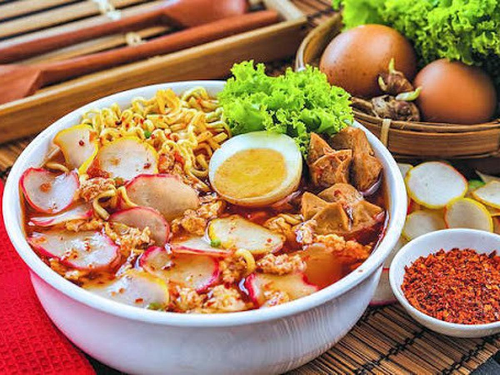

Selamat Datang di Cookpad
Bingung mau masak apa hari ini? jangan khawatir kami siap memberikan resep terbaik untuk anda, dijamin rasanya auto full senyum. Rasa yang tidak akan kamu temui di tempat lain. Tunggu apa lagi, langsung cobain resep kami dan temukan sensasi makan yang berbeda.
Masakan Populer
# Ayam Saus Mentega
# Cah Kangkung
# Capcay Goreng
# Baso Aci
# Telur Gulung
# Siomay Bandung14
Lihat lebih banyak14
Pecak Lele
Pecel lele atau pecak lele di Indonesia adalah nama sebuah makanan khas Jawa yang terdiri dari ikan lele dan sambal tomat.Seblak
Seblak mulai populer sekitar tahun 2000an yang berasal dari Cianjur yang sudah ada sebelum jaman kemerdekaan di wilayah Parahyangan. Namun yang membedakan seblak dengan makanan sejenisnya adalah seblak pada umumnya menggunakan kerupuk oren dengan bumbu cikur atau khas Sunda dan disajikan dengan kuah pedas.
Bahan-bahan :
- 3 siung bawang putih
- 6 siung bawang merah
- 7 cabai kecil
- 1 ruas kencur (sekitar 4-5 cm)
- 1 genggam kerupuk bawang
- Sawi secukupnya, 1 batang daun bawang
- 1 butir telur
- Secukupny garam, gula dan penyedap
Cara Membuatnya :
- Rendam kerupuk dan makaroni dengan air panas (bisa direbus). Lalu, tunggu sampai agak sesikit mengembang.
- Sambil menunggu kerupuk dan makaroni mengembang. Haluskan bawang merah, putih, kencur, dan cabai.
- Kemudian tumis dengan 5 sendok makan minyak goreng sampai harum.
- Tambahkan air kurang lebih 3 gelas. Tunggu sampai mendidih.
- Apabila sudah mendidih masukkan telur. Aduk sebentar sampai tercampur. Lalu, masukkan semua bahan - bahan.
- Masak sampai dirasa matang. Kemudian tambahkan garam, gula, dan penyedap rasa secukupnya. Aduk -aduk sebentar.
- Seblak siap dihidangkan.


Cookpad Ind.
Jl. Merpati Jakarta Selatan
Indonesia
Telphone : (123) 456-7890
Email : Cookpad@id.com